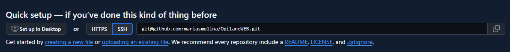

MVP mõiste
Minimal Viable Product (MVP) - toote, teenuse või teenuse testversioon, millel on minimaalne funktsioonide kogum (mõnikord isegi üks), mis toob lõpptarbijale väärtust.
Kuidas ma saan MVP printsiipi kasutada oma IT projektides:
- Alustan lihtsast versioonist: Teen toote valmis, lisades ainult kõige olulisemad funktsioonid, mis on vajalikud.
- Kogun tagasisidet: Loodan, et kasutajad proovivad toodet ja ütlevad, mis neile meeldib või ei meeldi.
- Parandan toodet:Teen muudatusi ja täiustusi vastavalt sellele, mida kasutajad on öelnud.
- Säästan aega ja raha: Ei raiska aega ja raha funktsioonidele, mida kasutajad ei vaja, vaid keskendun sellele, mis on kõige olulisem.
Remote repo tegemine
Remote repository Git-is on kaugserver, kus hoitakse koodiversioone ja millele pääseb ligi üle võrgu. Git võimaldab arendajatel hallata ja jagada koodi erinevate meeskondade ja masinate vahel, et teha koostööd.
Remote Git-repository loomiseks ja sellega töötamiseks järgige neid samme:
- Looge uus repository GitHub-is
- Avage GitHub ja logige sisse oma kontole
- Klõpsake nuppu New repository
- Lisage repository'le nimi ja vajutage Create repository
- Valige SSH URL ja kopeerige seda
- Remote repo tegemiseks kasutage terminalis järgmist käsku:
- git remote add origin https://github.com/teie_kasutajanimi/repository_nimi.git — määrab kaugrepo, kuhu teie kohalik kood saadetakse
- Kontrollige kaug-repositooriumi sidumist:
- git remote -v — kui olete loonud või liitunud olemasoleva kaugrepo'ga, saate kaugrepo URL-i kontrollida järgmise käsuga

- Teised käaskud seotud remote repoga:
- git remote remove origin "repo nimi" — eemaldab kaug-repositooriumi
- git remote set-url — muudab kaug-repositooriumi URL-i
- git remote rename "vana repo nimi" "uus repo nimi" — muudab kaug-repositooriumi nime
- git push — saadab lokaalsed muudatused kaug-repositooriumisse
- git pull — tõmbab kaug-repositooriumist muudatused kohalikku repositooriumisse
Antud sammud on piisavad kaug-repositooriumi loomiseks ja haldamiseks. Kui kasutate SSH-d, veenduge, et teie arvutis on õigesti seadistatud SSH-võtmed.